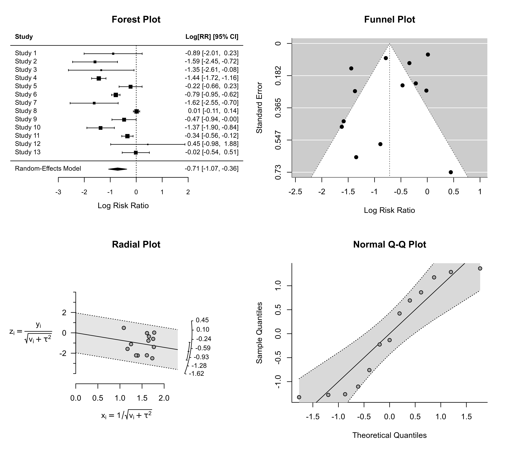
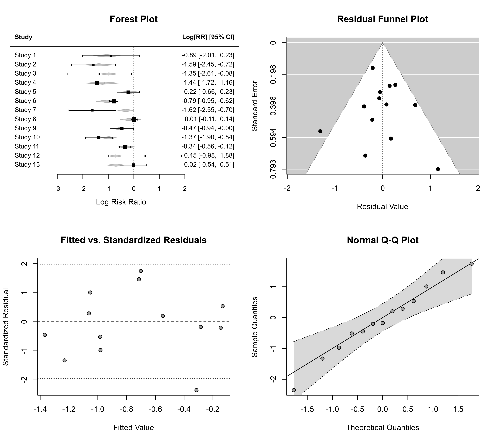

plot.rma.RdPlot method for objects of class "rma.uni", "rma.mh", "rma.peto", and "rma.glmm".
# S3 method for rma.uni
plot(x, qqplot=FALSE, ...)
# S3 method for rma.mh
plot(x, qqplot=FALSE, ...)
# S3 method for rma.peto
plot(x, qqplot=FALSE, ...)
# S3 method for rma.glmm
plot(x, qqplot=FALSE, ...)an object of class "rma.uni", "rma.mh", or "rma.peto". The method is not yet implemented for objects of class "rma.glmm".
logical to specify whether a normal QQ plot should be drawn (the default is FALSE).
other arguments.
Four plots are produced. If the model does not contain any moderators, then a forest plot, funnel plot, radial plot, and a plot of the standardized residuals is provided. If qqplot=TRUE, the last plot is replaced by a normal QQ plot of the standardized residuals.
If the model contains moderators, then a forest plot, funnel plot, plot of the standardized residuals against the fitted values, and a plot of the standardized residuals is provided. If qqplot=TRUE, the last plot is replaced by a normal QQ plot of the standardized residuals.
If the number of studies is large, the forest plot may become difficult to read due to the small font size. Stretching the plotting device vertically should provide more space.
Viechtbauer, W. (2010). Conducting meta-analyses in R with the metafor package. Journal of Statistical Software, 36(3), 1--48. https://doi.org/10.18637/jss.v036.i03
### calculate log risk ratios and corresponding sampling variances
dat <- escalc(measure="RR", ai=tpos, bi=tneg, ci=cpos, di=cneg, data=dat.bcg)
### fit random-effects model
res <- rma(yi, vi, data=dat)
### plot results
plot(res, qqplot=TRUE)

### fit mixed-effects model with absolute latitude and publication year as moderators
res <- rma(yi, vi, mods = ~ ablat + year, data=dat)
### plot results
plot(res, qqplot=TRUE)
